A marathon training app built from real runner research — personalized plans, adaptive coaching, and a system designed to take first-timers seriously from day one.
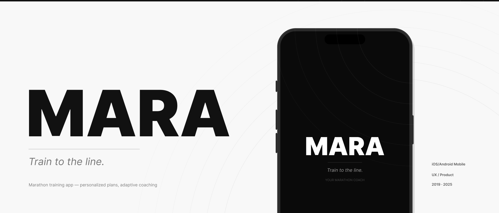
of people alive today have ever crossed a marathon finish line
average longevity gain for regular long-distance runners
weeks of structured training needed to reach the start line ready
People who sign up for marathons do it for reasons that don't show up in health dashboards — crossing a bucket list item, proving something to themselves, joining a community they admire. MARA was designed for the moment someone makes that decision and needs a system that takes them seriously.
I started training for my own first marathon in 2018 and tried six apps before abandoning all of them. The problem wasn't missing features — it was that none of them asked a single question before handing me a plan. I decided to design the one I needed.
After speaking with experienced runners from Heartbreak Hill Running Club and first-timers from my personal running group, a clear pattern emerged: the biggest gap in the market wasn't technology. It was a training app built solely, specifically, and uncompromisingly for the marathon.
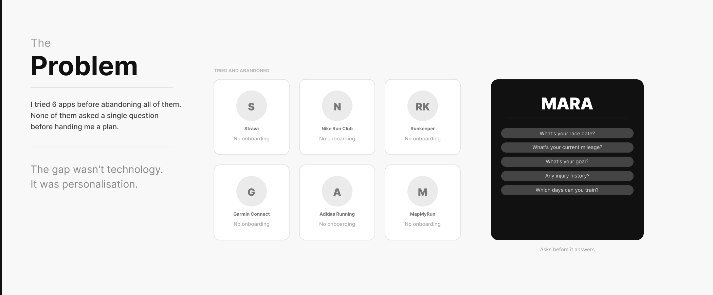
Sessions were conducted with experienced marathoners and first-timers currently in training. The synthesis surfaced goals and pain points that shaped every design decision that followed.
Experienced marathoners. Provided insight into what advanced runners expect — plan quality, watch integration, performance data, and the frustration of apps that don't respect existing fitness.
First-time marathoners in training. Surfaced anxiety about starting from scratch — the need for direction, concern about injury, uncertainty about whether they could do it, and the desire to enjoy the process.
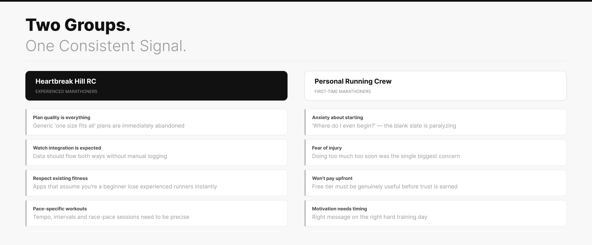
The single most repeated need. Generic plans were the primary reason runners abandoned existing apps.
First-timers were unwilling to pay before knowing they'd follow through. The free tier needed to be genuinely useful.
Runners didn't want a library of inspiration. They wanted the right message at the right moment on hard training days.
Check off a lifetime bucket list item. Set a personal record. Prove that anything is possible.
Anxious and uncertain. Do I need a coach? Where do I find the right program? Can I handle it?
Marathon runners intrigue her. If she can finish one, she knows she can overcome anything.
MARA builds the plan from race day back. Onboarding is a single-question-per-screen conversation — race date, goal, current mileage, available days, injury history — and outputs a full training block the user can review before committing.
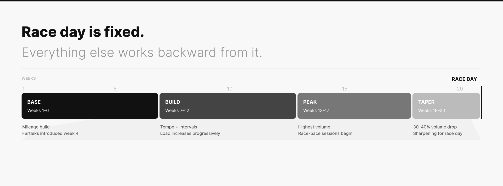
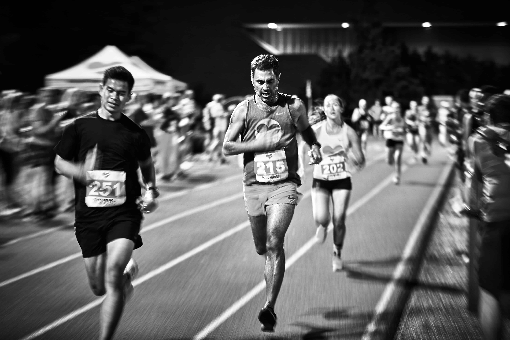
Every screen has a paper ancestor. The design moved through full process — research synthesis, sketching, wireframing, and prototype testing with real users before reaching hi-fi.
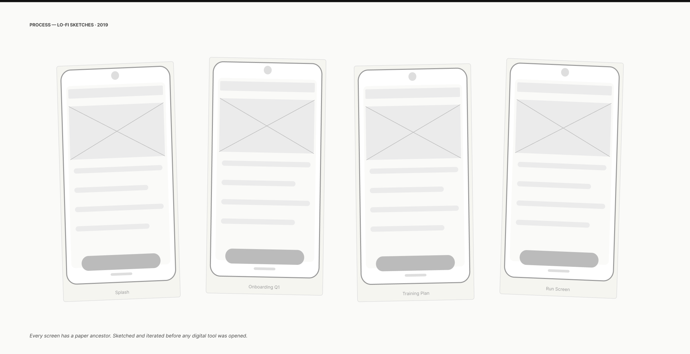
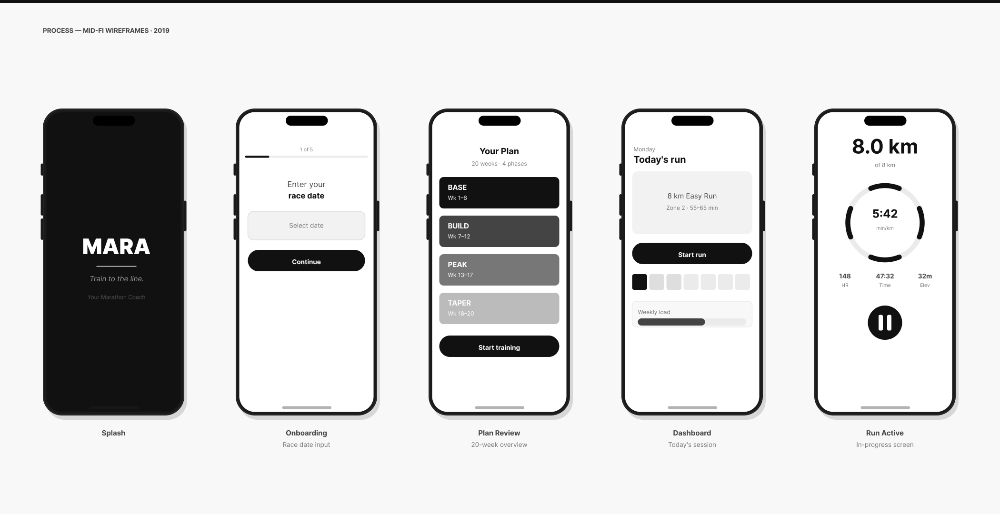
Controls were too small for in-motion use. Final version enlarged primary buttons with generous touch targets.
Social features, music controls, and general fitness tracking created cognitive noise. Everything not marathon-specific was cut.
Testing confirmed users responded strongly to focus. "Genuinely Marathon" became a product constraint, not just a tagline.
Wireframe onboarding listed all questions on one screen. Testing showed users reading all before answering any. Separated to one question per screen — completion improved, responses more considered.
"Fartlek" doesn't appear in a first-timer's experience. The same session is introduced as short bursts by feel. Intermediate users see the technical term from week one.
An early version buried stretching in R&R. When mobility sessions were added directly to the weekly calendar with a start button, follow-through improved. Visibility changed behavior.
The decision to build only for marathon training — no 5K plans, no general fitness — made every other decision cleaner and earned trust from runners underserved by general-purpose apps.
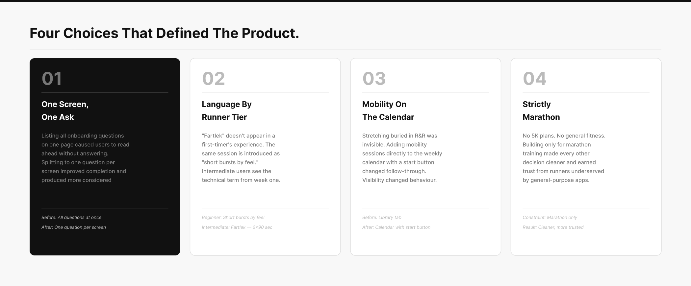
MARA was designed in 2019 as a rules-based plan engine. What AI adds is the ability to make the plan respond to the runner — in real time, over the full 20-week arc. The core logic holds. The system just needed time to catch up.
Wearable data tracks Heart Rate Variability daily. When HRV drops below baseline, the day's session adjusts before the app opens. HRV-guided adaptation reduced overtraining incidents by 18% versus fixed-plan controls.
The acute:chronic workload ratio — this week's load versus the 4-week average — is a documented soft tissue injury predictor. A ratio above 1.5 is the threshold. MARA surfaces a quiet banner before the user crosses it.
"I can't train Wednesday or Thursday" redistributes sessions while maintaining weekly load balance. The assistant explains what changed — the user's understanding of their own plan stays intact.
As data accumulates, MARA updates a race finish time projection after each session — a live estimate grounded in how training is actually going. The natural evolution of the watch integration planned in 2019.
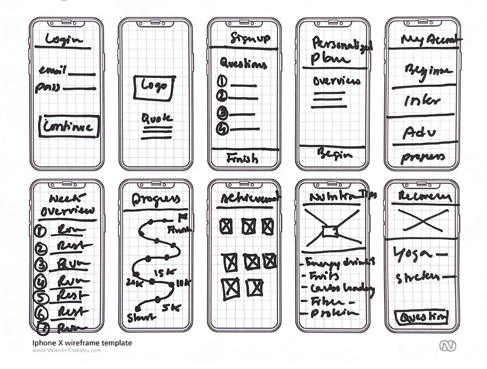
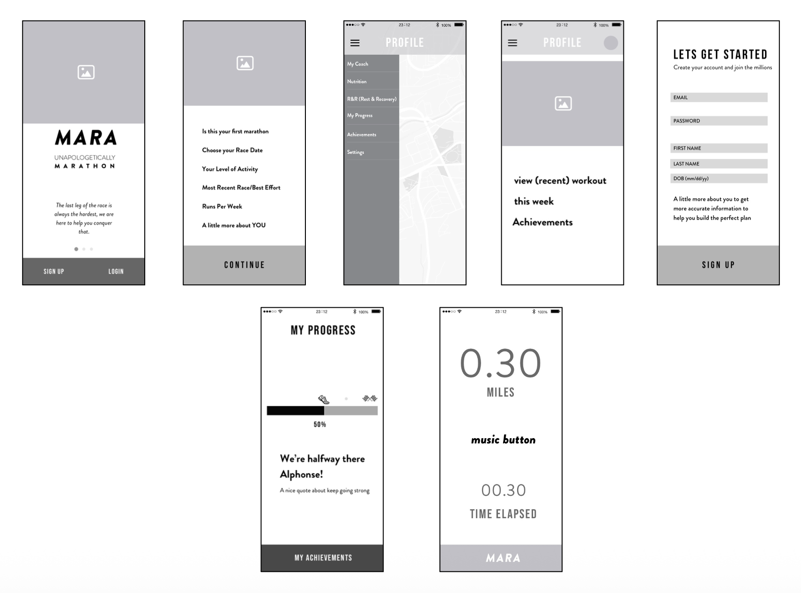
The first version displayed all movements simultaneously. Users read the instructions, set their phones down, and navigated back mid-movement. The revision shows one movement at a time with a countdown timer and a single short cue.
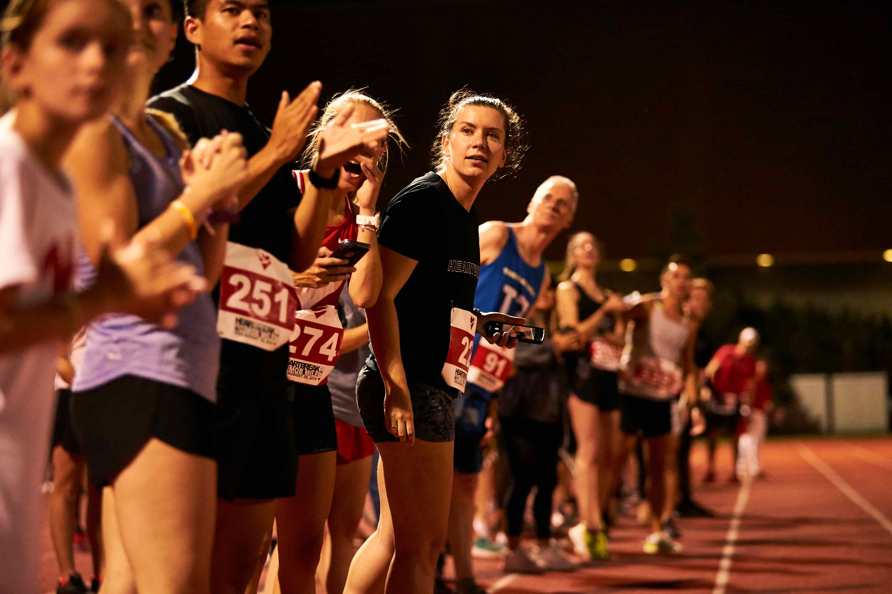
The research gave the beginner path genuine clarity. The advanced runner experience — speed work sequencing, how much autonomy experienced runners want — was designed partly from inference. The Heartbreak Hill sessions gave direction, but primary research specifically around that use case is the next piece the product needs.
Prototype testing was also more limited than the product deserved. Three findings shaped the final direction, but a more structured usability study — particularly around onboarding and the in-run screen — would have caught friction points that only appeared later.
The watch integration flagged in the 2019 next steps is the feature that connects most directly to the 2025 AI layer. What was a standalone roadmap item is now the data source for HRV monitoring, load tracking, and finish time prediction. The system was pointing in the right direction — it just needed time to catch up.
Session completion rate versus apps without contextual "why" copy. Mobility follow-through in a calendar view versus a library tab. Whether HRV adaptation improves week-to-week consistency without increasing cognitive load — tested against a static-plan control group.